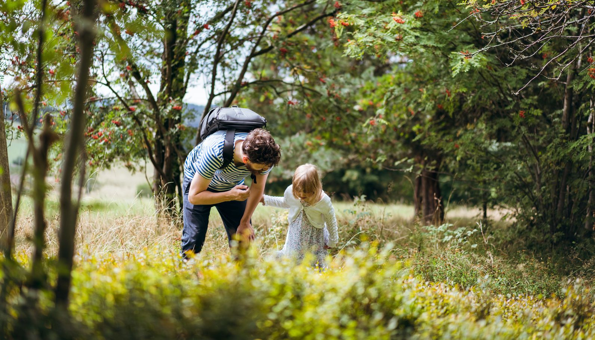
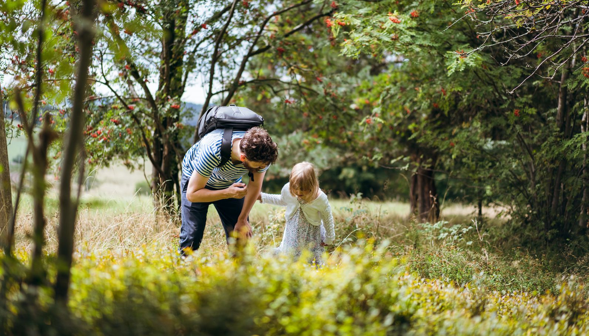

Herzlich willkommen im Bergbahnland!
Die Oberweißbacher Bergbahn ist das Herzstück im Bergbahnland. Sie ist die steilste Standseilbahn zum Transport normalspuriger Eisenbahnwagen und ein richtiges Kleinod. Im Bergbahnland gibt es jedoch noch viel mehr zu entdecken: Die elektrifizierte Flachstrecke mit Olitätenwagen, die Schwarzatalbahn durch das wildromantische Schwarzatal, den Fröbelwald und das Maschinarium.
Unsere Vorschläge für Ihren Ausflug
Bergbahntour
Mit unserer Bahnvielfalt erleben Sie die Schönheit des Thüringer Waldes. Im Maschinarium erfahren Sie die technischen Raffinessen unserer Bergbahn. Ihr Ausflug wird mit einem leckeren Happen im Speisewagen und der Heimreise mit dem Cabrio-Wagen abgerundet.
Kräutertour
Mit unserer Bergbahn in den Thüringer Wald. Lernen Sie die Vielfalt unserer Heimischen Kräuter kennen. Im Olitätenwagen erfahren Sie mehr mit Kräutermemory, Dustkasten und Ferngläsern. Ihr erlangtes Wissen können Sie im Walderlebnispfad Fröbelwald testen.
Auf den Spuren der Buckelapotheker
Von der Bergbahnstation Lichtenstein geht es durch den Fröbelwald hin zur Lichten-hainer Höhe. In Oberweißbach können Sie das Memorialmuseum "Friedrich Fröbel" besuchen. Auf dem Weg nach Cursdorf können Sie Halt an der Kräuterhütte, dem Fröbelturm und der Himmelsleiter machen.
Kurztour für Gruppen
Sollte die Bergbahn ein Baustein Ihrer Tour werden, können Sie folgender Empfehlung folgen. In knapp zwei Stunden haben Sie inklusive Imbisses die Highlights des Bergbahnlandes entdeckt. Wenn Sie diese Tour zeitlich nach hinten schieben, könnten Sie anstelle des Mittagsimbisses ein Kaffeetrinken im Speisewagen einplanen.
Mittagstour für Gruppen
Sollte die Bergbahn ein Baustein Ihrer Tour werden und Sie möchten diese ab dem Mittag entdecken, dann können Sie folgender Empfehlung folgen. Alternativ können Sie am Nachmittag in Obstfelderschmiede mit einem Kaffeegedeck starten.
Auf Fröbel's Spuren
Friedrich Fröbel ist der Begründer des Kindergartens und hier im Schwarzatal geboren. Begeben Sie sich auf eine spielerische Entdeckungsreise.
Bahnerlebnis für Groß und Klein
Bei dieser Ausflugstour schlagen die Herzen von allen kleinen und großen Eisenbahnfans höher. Schwarzatalbahn, Bergbahn und die Flachstrecke sowie das Erlebnismuseum Maschinarium stehen auf dem Programm und sind mit dem Kinderwagen zugänglich.